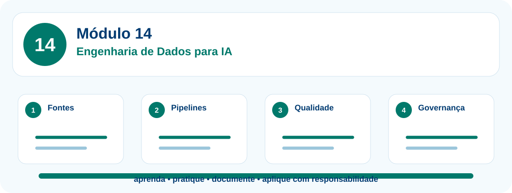

Engenharia de Dados para Inteligência Artificial
Coleta, preparação, qualidade, pipelines, armazenamento, governança e disponibilização de dados para análises, automações e aplicações de IA.
Ferramentas relacionadas neste módulo

Apresentação do módulo
Coleta, preparação, qualidade, pipelines, armazenamento, governança e disponibilização de dados para análises, automações e aplicações de IA. O percurso foi desenhado para participantes que desejam sair do uso pontual de ferramentas e construir competência técnica aplicada, com segurança, documentação e revisão humana.
Competências desenvolvidas
- explicar o ciclo de vida dos dados e o papel da engenharia de dados em projetos de IA;
- inventariar fontes, formatos, responsáveis, periodicidade e restrições de uso;
- criar dicionários de dados, metadados e documentação mínima de bases;
- desenhar e implementar pipelines ETL/ELT com validação e registro de execução;
- aplicar critérios de qualidade, limpeza, tratamento de ausências, duplicidades e outliers;
- diferenciar data lake, data warehouse, lakehouse e camadas bronze, prata e ouro;
- processar dados com Python, DataFrames e consultas para gerar indicadores;
- aplicar LGPD, governança, catálogo, permissões e linhagem de dados;
- realizar análise exploratória e mineração de dados com cautela metodológica;
- entregar um pipeline de dados documentado, rastreável e preparado para análise ou IA.
Conceitos centrais
14.1 Fundamentos de engenharia de dados e ciclo de vida
Objetivo da unidade
Compreender o papel da engenharia de dados na coleta, organização, qualidade e disponibilização de dados para análise e IA.
Conceitos trabalhados
Exemplo aplicado
Roteiro de laboratório
Roteiro de prática: Desenhar o ciclo de vida de um dado
- Escolha um processo simples.
- Liste origem, formato, responsáveis e destino dos dados.
- Identifique riscos de qualidade e privacidade.
- Desenhe o fluxo de ponta a ponta.
Produto da unidade
Mapa do ciclo de vida de dados.
Evidência de aprendizagem
O participante diferencia dado bruto, dado tratado e produto de dados.
14.2 Fontes de dados, coleta e ingestão
Objetivo da unidade
Identificar fontes internas, externas, APIs e arquivos, definindo estratégias responsáveis de coleta.
Conceitos trabalhados
Exemplo aplicado
Roteiro de laboratório
Roteiro de prática: Planejar a ingestão de dados
- Liste fontes e formatos.
- Defina periodicidade de atualização.
- Registre permissões e finalidade.
- Monte uma tabela de inventário de fontes.
Produto da unidade
Inventário inicial de fontes.
Evidência de aprendizagem
O participante reconhece origem, formato, frequência e restrições de uso.
14.3 Formatos, modelagem e metadados
Objetivo da unidade
Compreender CSV, JSON, planilhas, tabelas, chaves, dicionário de dados e metadados.
Conceitos trabalhados
Exemplo aplicado
Roteiro de laboratório
Roteiro de prática: Criar dicionário de dados
- Liste campos de uma base fictícia.
- Defina tipo, descrição, obrigatoriedade e exemplo.
- Indique se há dado pessoal.
- Revise nomes de colunas para ficarem consistentes.
Produto da unidade
Dicionário de dados.
Evidência de aprendizagem
O participante documenta campos antes de processá-los.
14.4 ETL, ELT e pipelines de dados
Objetivo da unidade
Construir uma sequência de extração, transformação, carga, validação e registro de execução.
Conceitos trabalhados
Exemplo aplicado
Roteiro de laboratório
Roteiro de prática: Implementar um pipeline simples
- Crie uma base bruta fictícia.
- Defina regras de transformação.
- Aplique validações e registre pendências.
- Salve a base tratada e um log da execução.
Produto da unidade
Pipeline ETL simples.
Evidência de aprendizagem
O participante explica cada etapa do pipeline e seus critérios.
14.5 Qualidade de dados, limpeza e outliers
Objetivo da unidade
Aplicar critérios de completude, consistência, unicidade, validade e tratamento de valores discrepantes.
Conceitos trabalhados
Exemplo aplicado
Roteiro de laboratório
Roteiro de prática: Criar checklist de qualidade
- Defina regras de qualidade.
- Marque registros válidos e pendentes.
- Trate valores ausentes e duplicados.
- Documente o que foi corrigido e o que exige revisão humana.
Produto da unidade
Relatório de qualidade de dados.
Evidência de aprendizagem
O participante identifica problemas de dados antes de gerar análise.
14.6 Armazenamento: data lake, data warehouse e lakehouse
Objetivo da unidade
Diferenciar formas de armazenar dados brutos, tratados e analíticos.
Conceitos trabalhados
Exemplo aplicado
Roteiro de laboratório
Roteiro de prática: Organizar camadas de dados
- Crie uma estrutura conceitual bronze, prata e ouro.
- Defina o que entra em cada camada.
- Relacione com governança e acesso.
- Explique quando usar planilha, banco, data lake ou warehouse.
Produto da unidade
Mapa de camadas de dados.
Evidência de aprendizagem
O participante escolhe armazenamento conforme finalidade e maturidade.
14.7 Processamento com Python, SQL e DataFrames
Objetivo da unidade
Usar pandas, consultas e operações tabulares para transformar dados em indicadores.
Conceitos trabalhados
Exemplo aplicado
Roteiro de laboratório
Roteiro de prática: Transformar dados em indicadores
- Carregue uma base fictícia em pandas.
- Selecione colunas necessárias.
- Agrupe e calcule indicadores.
- Exporte uma tabela final para CSV.
Produto da unidade
Tabela de indicadores.
Evidência de aprendizagem
O participante transforma dados em informação verificável.
14.8 Governança, LGPD, catálogo e linhagem
Objetivo da unidade
Aplicar princípios de finalidade, acesso, documentação, rastreabilidade e proteção de dados.
Conceitos trabalhados
Exemplo aplicado
Roteiro de laboratório
Roteiro de prática: Criar registro de governança
- Liste dados pessoais e sensíveis.
- Defina finalidade e prazo de uso.
- Crie um registro de linhagem simples.
- Indique revisão humana e responsáveis.
Produto da unidade
Ficha de governança de dados.
Evidência de aprendizagem
O participante conecta engenharia de dados a responsabilidade institucional.
14.9 Mineração de dados, análise exploratória e modelos
Objetivo da unidade
Preparar dados para análise, mineração de dados, aprendizado de máquina e avaliação crítica.
Conceitos trabalhados
Exemplo aplicado
Roteiro de laboratório
Roteiro de prática: Explorar dados com cautela
- Calcule estatísticas descritivas.
- Crie gráficos exploratórios.
- Levante hipóteses e limitações.
- Indique quais dados adicionais seriam necessários.
Produto da unidade
Relatório exploratório.
Evidência de aprendizagem
O participante diferencia exploração, hipótese e conclusão.
14.10 Projeto final: pipeline de dados para IA
Objetivo da unidade
Integrar ingestão, qualidade, transformação, armazenamento, visualização e documentação em um produto final.
Conceitos trabalhados
Exemplo aplicado
Roteiro de laboratório
Roteiro de prática: Construir pipeline final documentado
- Defina objetivo e fontes.
- Implemente ou desenhe ingestão e transformação.
- Aplique regras de qualidade.
- Gere indicadores e visualização.
- Documente governança, limitações e próximos passos.
Produto da unidade
Pipeline de dados completo com relatório.
Evidência de aprendizagem
O participante apresenta uma solução de engenharia de dados com rastreabilidade.
Projeto integrador do Módulo 14
Produto final: um artefato prático documentado, com dados fictícios ou anonimizados, evidências de execução, explicação das decisões tomadas e cuidados éticos.
O participante deve apresentar objetivo, dados usados, ferramentas escolhidas, etapas realizadas, validações, limitações, riscos e próximos passos.